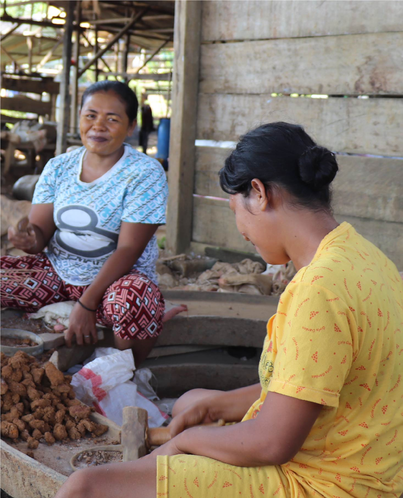

United Nations In Indonesia
Country Results Report 2021
Innovative Financing Instruments Leveraged
for Sustainable Development

The Ministry of National Development Planning has estimated that Indonesia needs US $4.7 trillion to finance the achievement of the SDGs by 2030, a figure the COVID-19 pandemic will have made far higher. As such, the UN is working with the Government to develop innovative financing mechanisms to close the financing gap.
Officially launched in December 2021, the Joint SDG Fund-backed ASSIST Joint Programme engages four UN agencies to scale up proven and new financial instruments that can be used to leverage public and private financing towards the SDGs. The programme is designed to build the capacity of institutional stakeholders to access and utilize financing to achieve the SDGs. It mobilised a total of US$1.68 billion in resources in Indonesia in 2021, through an innovative mixture of public and private financing.
Through ASSIST, the UN supported the government in launching its inaugural sovereign SDG Bond in September 2021. The bond amounted to EUR 500 million (US $584 million) at a 1.3% coupon rate in the global capital market. It focuses on financing social sectors responding to the effects of the COVID-19 pandemic, including projects on social protection, health, and education.
Prior to the bond’s issuance, the UN provided support towards the development of Indonesia’s SDGs Government Securities Framework, as well as the Second Party Opinion external review process for that framework. The Framework serves as the basis for the issuance of Indonesia’s sovereign thematic bonds, known as sukuk, which are oriented towards three main sectors—green, blue, and social investments. The framework lays out specific criteria for projects in each of the three sectors to ensure alignment with SDG targets; all have strict requirements on gender equality, and beneficiary targeting to ensure interventions reach women, indigenous populations, youth, rural populations, people with disabilities, and others at risk of being left behind.
Indeed, Indonesia has already issued several green sukuk with UN support. In June 2021, the Government issued its fourth Global Green Sukuk, amounting to US$ 750 million. In November 2021, Indonesia issued its third Retail Green Sukuk, amounting to IDR 5 trillion (US$346 million). Proceeds from both issuances will be allocated towards financing and refinancing projects under two eligible sectors: sustainable transportation and resilience to climate change.
The ASSIST programme also functions as a platform for the UN in Indonesia to partner with the private sector. To date, it has facilitated a UN partnership with Mandiri Capital Indonesia and the APEC Business Advisory Council on Indonesia Impact Fund, a private equity fund targeting SDG-oriented startups. It has also facilitated a partnership between the UN and Bank Rakyat Indonesia to develop green and SDG-linked loans. Both instruments will prioritize women-owned and youth-led Small Medium Enterprises. The UN is also working with the National Board of Zakat (BAZNAS) Islamic financing programme to expand zakat financing towards climate and biodiversity outcomes.
As a follow-up to the Government of Indonesia’s commitment to pioneer an Integrated National Financing Framework (INFF), the UN and the Ministry of National Development Planning co-launched an INFF Assessment in Indonesia in October 2021. The assessment is expected to lead to an INFF Roadmap, which aims to support the further integration of financing policies and reforms that will unlock investments that advance national sustainable development objectives.
To leverage more private sector investment for the SDGs, the UN supported the Government in developing an SDG investment map, which aims to translate country-level SDG gaps and priorities into a map of private sector investment opportunities. Indonesia will be the first country in the ASEAN to publish its SDG Investor Map in Q1 2022, ahead of Cambodia, Vietnam, and Thailand, which are developing similar maps. UN support for the map draws on desk research, policy priorities, and a detailed consultation process with government stakeholders, think tanks, corporations, and more than 45 impactful commercial investors. The map also includes analysis on optimising digital solutions, climate change impacts, gender, and marginalisation.
In 2021, the Government gave a mandate to PT Sarana Multi Infrastructure, a state-owned company under the Ministry of Finance, to establish and manage SDG Indonesia One, a funding cooperation platform integrated to support infrastructure-oriented development toward the achievement of the SDGs in Indonesia. The platform derives funding from a mixture of private, philanthropic, donor, banking, investment, and other sources, and supports SDG-related infrastructure
projects from concept to implementation. It helps reduce investor risk, ensure environmental protection, and mobilize commercial and other sources of capital.
Substantial funding for the SDGs is also derived from all UN agencies and funds that operate in Indonesia, via international development partners, private sector partners, and other donors. One example among many is the International Fund for Agricultural Development’s (IFAD) mobilization of a total of $ 680 million from development partners for the period 2017–2024, of which $ 600 million is financed by the Asian Development Bank.